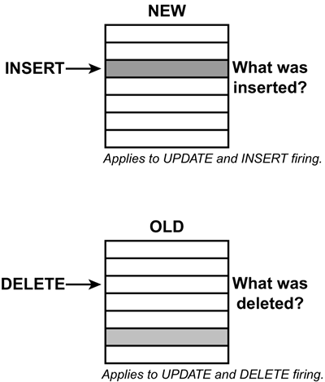

|
|
< Day Day Up > |
|
What Is a Trigger?Simply stated, a trigger is a piece of code that is executed in response to an SQL data modification statement; that is, an INSERT, UPDATE, or DELETE. To be a bit more precise: Triggers are event-driven specialized procedures that are stored in and managed by the RDBMS. Each trigger is attached to a single, specified table. A trigger can be thought of as an advanced form of "rule" or "constraint" written using an extended form of SQL. A trigger cannot be directly called or executed; it is automatically executed (or "fired") by DB2 as the result of an action—a data modification to the associated table. After a trigger is created, it is always executed when its "firing" event occurs (INSERT, UPDATE, or DELETE). Therefore, triggers are automatic, implicit, and non-bypassable. The SchemaRecall from Chapter 4, "Using DB2 User-Defined Functions and Data Types," that user-defined functions, user-defined distinct types, stored procedures, and triggers are all associated with a schema. By default, the schema name is the authid of the process that issues the CREATE FUNCTION, CREATE DISTINCT TYPE, CREATE PROCEDURE, or CREATE TRIGGER statement. A schema, therefore, is simply a logical grouping of procedural database objects (user-defined functions, user-defined distinct types, stored procedures, and triggers). You can specify a schema name when you create a user-defined function, type, or trigger. If the schema name is not the same as the SQL authorization ID, the issuer of the statement must have either SYSADM or SYSCTRL authority, or the authid of the issuing process has the CREATEIN privilege on the schema. NOTE A DB2 schema is not really a DB2 object. You cannot explicitly CREATE or DROP a schema. The schema is implicitly created when the first DB2 object is created using that schema name. Triggers Are Hybrid DB2 ObjectsTriggers are like other database objects, such as tables and indexes, in that they are created using DDL, stored in the database, and documented as entries in the DB2 Catalog. Triggers also are like stored procedures and check constraints in that they contain code, or logic, and can be used to control data integrity. Triggers Versus Stored ProceduresTriggers are similar in functionality to stored procedures. Both consist of procedural logic that is stored at the database level. However, stored procedures are not event-driven and are not attached to a specific table. A stored procedure is explicitly executed by invoking a CALL to the procedure (instead of implicitly being executed like triggers). Additionally, a stored procedure can access many tables without being specifically associated to any of them. Triggers Versus Check ConstraintsTriggers are similar to table check constraints because triggers can be used to control integrity when data is changed in a DB2 table. However, triggers are much more powerful than simple check constraints because they can be coded to accomplish more types of actions. A check constraint is used to specify what data is allowable in a column, but a trigger can do that, plus make changes to data. Furthermore, a trigger can act on data in other tables, whereas a check constraint cannot. Furthermore, triggers have more knowledge of the database change. A trigger can view both the old value and the new value of a changed column and take action based on that information. NOTE When deciding whether to use a constraint or a trigger, keep in mind that triggers are more expensive than an equivalent constraint. You should always consider the relative cost of executing each. If the task at hand can be completed with either a trigger or a constraint, favor constraints because they are cheaper than triggers and it is always better to use the cheaper alternative. Why Use Triggers?Triggers are useful for implementing code that must be executed on a regular basis due to a predefined event. By utilizing triggers, scheduling and data integrity problems can be eliminated because the trigger will be fired whenever the triggering event occurs. You need not remember to schedule or code an activity to perform the logic in the trigger. It happens automatically by virtue of it being in the trigger. This is true of both static and dynamic SQL; planned and ad hoc. Simply stated: Whenever the triggering event occurs, the trigger is fired. Triggers can be implemented for many practical uses. Quite often, it is impossible to code business rules into the database using only DDL. For example, DB2 does not support complex constraints (only value-based CHECK constraints) or various types of referential constraints (such as pendant DELETE processing or ON UPDATE CASCADE). Using triggers, a very flexible environment is established for implementing business rules and constraints in the DBMS. This is important because having the business rules in the database ensures that everyone uses the same logic to accomplish the same process. Triggers can be coded to access and/or modify other tables, print informational messages, and specify complex restrictions. For example, consider the standard suppliers and parts application used in most introductory database texts. A part can be supplied by many suppliers and a supplier can supply many parts. Triggers can be used to support the following scenarios:
The number of business rules that can be implemented using triggers is truly limited only by your imagination (or, more appropriately, your business needs). After you define a trigger on a table, it is stored in the database, and any application or ad hoc SQL that modifies that table uses it. Triggers can help ease application development and maintenance tasks. For example, if a business rule changes, you only have to update the trigger, not the application code. Furthermore, if ad hoc updates are allowed, triggers will enforce integrity rules that otherwise would have been bypassed because the update was ad hoc. Therefore, you should code business rules into triggers instead of application program logic whenever possible. Additionally, triggers can access non-DB2 resources. This can be accomplished by invoking a stored procedure or a user-defined function that takes advantage of the OS/390 resource recovery services (RRS). Data stored in the non-DB2 resource can be accessed or modified in the stored procedure or user-defined function that is called from the trigger. When Does a Trigger Fire?At the basic level, we have already discussed when a trigger fires: that is, whenever its triggering activity occurs. For example, an UPDATE trigger will fire whenever an UPDATE is issued on the table on which the trigger is defined. But there is another, more subtle, question. Does the logic in the trigger get executed before the firing UPDATE or after? Two options exist for when a trigger can fire: before the firing activity occurs or after the firing activity occurs. DB2 supports both "before" and "after" triggers. A "before" trigger executes before the firing activity occurs; an "after" trigger executes after the firing activity occurs. In DB2, "before" triggers are restricted because they cannot perform updates. Knowing how the triggers in your databases function is imperative. Without this knowledge, properly functioning triggers cannot be coded, supported, or maintained effectively. Why is this? Consider, for example, if the firing activity occurs before the trigger is fired. In other words, the INSERT, UPDATE, or DELETE occurs first; then, as a result of this action, the trigger logic is executed. If necessary, the trigger code can change transition variables. What if the trigger is fired before the actual firing event occurs? In this situation, DB2 disallows modification of transition variables. Another interesting feature of DB2 triggers is the order in which they are fired. If multiple triggers are coded on the same table, which trigger is fired first? It can make a difference as to how the triggers should be coded, tested, and maintained. The rule for order of execution is basically simple to understand, but can be difficult to maintain. For triggers of the same type, they are executed in the order in which they were created. For example, if two DELETE triggers are coded on the same table, the one that physically was created first is executed first. Keep this in mind as you make changes to your database objects and triggers. If you need to DROP the table and re-create it to implement a database change, make sure you create the triggers in the same order as they originally were created to keep the functionality the same. To understand why this is important, consider this simple example. Two INSERT triggers are created on TABLE1, as follows:
The triggers are of the same type, so because TRIGGER1 was created first, it will fire first whenever an INSERT occurs to TABLE1. If COL1 of TABLE2 is initially set to 1, after the triggers fire, the value will be (1 + 5) * 2 = 12 However, if you later make changes requiring the triggers to be dropped and re-created, but inadvertently created them in reverse order, TRIGGER2 then TRIGGER1, the actions would change causing the following to occur: (1 * 2) + 5 = 7 You can see that this can cause drastically different results. Determining the procedural activity that is required when triggers are present can be a complicated task. It is of paramount importance that all developers are schooled in the firing methods utilized for triggers in DB2. To determine the order in which the triggers were created for a table, issue the following query substituting the table owner and table name in place of the question marks SELECT DISTINCT SCHEMA, NAME, CREATEDTS FROM SYSIBM.SYSTRIGGERS WHERE TBOWNER = ? AND TBNAME = ? ORDER BY CREATEDTS; The results will be returned in the order the triggers were created, earliest to latest. The DISTINCT is required because trigger definitions may require multiple rows in SYSIBM.SYSTRIGGERS. Creating TriggersTriggers are created using the CREATE TRIGGER DDL statement. Before creating any triggers, be sure you know
The DDL statement issued to CREATE a trigger requires the following details:
Furthermore, like any program you write, you should have the basic logic and flow of the trigger code mapped out before you sit down to write it. So, let's examine the basic things that you must know before coding a trigger. The first consideration, of course, is for which table the trigger should be defined. The trigger must be defined for the table that you want to monitor for inserts, updates, or deletes. Next, you must decide what the triggering event should be: INSERT, UPDATE, or DELETE. The next decision is to determine when the trigger is to be activated—before or after the triggering activity occurs. Keep in mind that BEFORE triggers are activated before DB2 makes any changes to the triggering table and cannot activate other triggers. AFTER triggers are activated after DB2 makes changes to the triggering table and can potentially activate other triggers. The granularity of the trigger must be determined. Because SQL is a set-level language, any single SQL statement can impact multiple rows of data. For example, one DELETE statement can actually cause zero, one, or many rows to be removed. You must take this into account as you build triggers. Therefore, there are two levels of granularity that a trigger can have: statement-level or row-level. A statement-level trigger is executed once on firing, regardless of the actual number of rows inserted, deleted, or updated. A statement-level trigger is coded by specifying the FOR EACH STATEMENT clause. A row-level trigger, once fired, is executed once for each and every row that is inserted, deleted, or updated. A row-level trigger is coded by specifying the FOR EACH ROW clause. Different business requirements will drive what type of trigger granularity should be chosen. CAUTION Only AFTER triggers can be defined with the FOR EACH STATEMENT clause; both BEFORE and AFTER triggers can be defined with the FOR EACH ROW clause. CAUTION Performance problems can ensue when triggers are defined with the FOR EACH ROW clause. Consider the impact of issuing a mass delete against a table with a FOR EACH ROW trigger defined on it. A delete trigger would fire once for every row that is deleted. For row-level triggers, you might need to refer to the values of columns in each updated row of the triggering table. To do this, you can use specialized transition variables that provide, in essence, before and after views of the changed data. Each trigger can have one NEW view of the table and one OLD view of the table available. These "views" are accessible only from triggers. They provide access to the modified data by viewing information in the transaction log. The OLD transition variables contain the values of columns before the triggering SQL statement updates them. This information is particularly useful if you need to access the prior value of a column before a triggering UPDATE or DELETE statement. The NEW transition variables contain the values of columns after the triggering SQL statement updates them. You can define NEW transition variables for UPDATE and INSERT triggers. Refer to Figure 8.1 for a graphic representation of the OLD and NEW transition variables. When an INSERT occurs, the NEW table contains the rows that were just inserted into the table to which the trigger is attached. When a DELETE occurs, the OLD table contains the rows that were just deleted from the table to which the trigger is attached. An UPDATE statement logically functions as a DELETE followed by an INSERT. Therefore, after an UPDATE, the NEW table contains the new values for the rows that were just updated in the table to which the trigger is attached; the OLD table contains the old values for the updated rows. Figure 8.1. Trigger transition variables: NEW and OLD. You can also use transition tables to refer to the entire set of rows that a triggering SQL statement modifies, rather than individual rows. Transition variables and transition tables are specified in the REFERENCING clause of the CREATE TRIGGER statement. Transition variables are defined using the OLD AS and NEW AS clauses; transition tables are defined using the OLD_TABLE AS and NEW_TABLE AS clauses. Each trigger can include two correlation names, one for OLD and one for NEW, and two table names, one for the OLD_TABLE and one for the NEW_TABLE. Each of the correlation names must be unique from the others. Table 8.1 outlines the transition variables that are permitted for each type of trigger. In the table N/A indicates not allowed.
So, transition tables can be specified only for AFTER triggers. Similarly, transition variables are allowable only for triggers with row granularity (that is, triggers specifying FOR EACH ROW). NOTE Keep in mind that the scope of the transition variables and transition tables is the triggered action. Do not refer to transition variables or transition tables outside of the trigger. The final consideration is how to code the actual logic that is to be performed when the trigger fires. This logic is placed inside of a BEGIN and END grouping as follows:
BEGIN ATOMIC
triggered-SQL-statements
END
Like any "program," the SQL statements are executed in the order they are specified. You must code the keywords BEGIN ATOMIC and END only if you code more than one SQL statement. Each SQL statement must end with a semicolon (;). Only certain types of SQL can be issued from certain types of triggers. Table 8.2 outlines the types of SQL statements that can be coded inside DB2 triggers.
NOTE SQL statements in triggers cannot refer to host variables, parameter markers, or undefined transition variables. The statements can refer only to tables and views at the current server. The WHEN ClauseThe WHEN clause is used to control the conditions under which the trigger will fire. A search condition consists of one or more predicates. Search conditions for the WHEN clause are formulated just like search conditions in an SQL WHERE clause. A search condition always evaluates to true, false, or unknown. If a condition is coded into the WHEN clause the triggered SQL statements are executed only if the search condition evaluates to true. The WHEN clause is optional. If the WHEN clause is omitted, the triggered action always is executed. However, if a trigger search condition is coded, the trigger will stop executing and return control to the INSERT, UPDATE, or DELETE that triggered it as soon as the condition is determined to be false. Of course, when the condition is true, the trigger body is executed. Consider specifying a trigger condition when the trigger must fire only for a subset of rows that apply. The more specific the condition, the higher the chances of improving trigger performance. Now let's take a look at some sample triggers to see how these clauses can be used in CREATE TRIGGER statements. Trigger ExamplesThe following is an example of using the CREATE TRIGGER statement to create a very simple trigger:
CREATE TRIGGER SALARY_UPDATE
BEFORE UPDATE OF SALARY
ON DSN8810.EMP
FOR EACH ROW MODE DB2SQL
WHEN (NEW.SALARY > (OLD.SALARY * 1.5))
BEGIN ATOMIC
SIGNAL SQLSTATE '75001' ('Raise exceeds 50%');
END;
This statement creates an UPDATE trigger named SALARY_UPDATE. The trigger will fire before the actual UPDATE that fires it occurs. The trigger will execute for every row impacted by the UPDATE. If the new value for the SALARY column exceeds 50% of the old value, an error is raised giving an SQLSTATE code and message. NOTE This is a very simple trigger to impose a business rule on the database. It does not impact data in any other tables. After the trigger has been created, it will automatically be fired any time the firing event (an UPDATE to the SALARY column in the EMP table) occurs. When creating triggers, you can call stored procedures to deliver more trigger functionality. Consider the following trigger, for example: CREATE TRIGGER ORDER_STOCK AFTER UPDATE OF PRENDATE ON DSN8810.PROJ REFERENCING NEW AS NEW FOR EACH ROW MODE DB2SQL WHEN (NEW.PRENDATE < CURRENT DATE + 14 DAYS) BEGIN ATOMIC CALL PROJCRIT(NEW.PROJNO); END In this case, if the date the project is to end is modified to be within the next two weeks (14 days), call the PROJCRIT stored procedure to perform functionality required for critical projects. This can be as simple as creating a report for management, or as complex as modifying project status information in multiple tables (or, really, whatever you can do within a stored procedure). The following is another example of creating a trigger, this time an INSERT trigger:
CREATE TRIGGER TOT_COMP
AFTER UPDATE OF SALARY, BONUS, COMM ON DSN8810.EMP
REFERENCING NEW AS INSERTED, OLD AS DELETED
FOR EACH ROW MODE DB2SQL
WHEN (INSERTED.SALARY <> DELETED.SALARY OR
INSERTED.BONUS <> DELETED.BONUS OR
INSERTED.COMM <> DELETED.COMM)
BEGIN ATOMIC
UPDATE EMP_SALARY
SET TOT_COMP = INSERTED.SALARY + INSERTED.BONUS + INSERTED.COMM
WHERE EMP_SALARY.EMPNO = INSERTED.EMPNO;
END
This trigger is used to check for changes to the components of an employee's total compensation. The trigger keeps derived data in synch with its components. In this case, whenever SALARY, BONUS, or COMM are changed in the EMP table, a table named EMP_SALARY has its TOT_COMP column modified to be the new sum of salary, bonus, and commission information. Triggers can be used in this manner to maintain data integrity across tables when derived data is stored physically. Whenever any value in the three components of total compensation changes, the trigger automatically calculates a new TOT_COMP and updates it in the table. Trigger PackagesWhen a trigger is created, DB2 creates a trigger package for the statements in the triggered action. The trigger package is recorded in SYSIBM.SYSPACKAGE and has the same name as the trigger. The trigger package is always accessible and can be executed only when a trigger is activated by a triggering operation. Trigger packages do not follow the same rules as regular DB2 packages. For example, it is not possible to maintain multiple versions of a trigger package. Additionally, the user executing the triggering SQL operation does not need to have the authority to execute the trigger package. Furthermore, the trigger package does not need to be in the package list for the plan that is associated with the program that contains the SQL statement. The only way to delete the trigger package is to use the DROP TRIGGER statement. Of course, if you issue a DROP TABLE and the table has a trigger, the trigger will be dropped, too. The trigger package is implicitly bound when the trigger is created. When the trigger package is implicitly bound by DB2, it will use the following BIND attributes:
Of course, you can REBIND the trigger package once it is created. In many instances you will want to do this to change the default options. By rebinding the trigger package right after it is created you can specify EXPLAIN(YES) or CURRENTDATA(NO), for example. Be sure to use REBIND to ensure you are using the BIND options that you choose—instead of the default options foisted on you by DB2. Triggers Can Fire Other TriggersAs we've already learned, a trigger is fired by an INSERT, UPDATE, or DELETE statement. However, a trigger can also contain INSERT, UPDATE, or DELETE logic within itself. Therefore, a trigger is fired by a data modification, but can also cause another data modification, thereby firing yet another trigger. When a trigger contains INSERT, UPDATE, and/or DELETE logic, the trigger is said to be a nested trigger. DB2 places a limit on the number of nested triggers that can be executed within a single firing event. If this were not done, it could be quite possible to have triggers firing triggers ad infinitum until all of the data was removed from an entire database. If referential integrity is combined with triggers, additional cascading updates and/or deletes can occur. If a DELETE or UPDATE results in a series of additional UPDATEs or DELETEs that need to be propagated to other tables, the UPDATE or DELETE triggers for the second table also will be activated. This combination of multiple triggers and referential integrity constraints are capable of setting a cascading effect into motion, which can result in multiple data changes. DB2 limits this cascading effect to 16 levels to prevent endless looping. If more than 16 levels of nesting occur, the transaction is aborted. The ability to nest triggers provides an efficient method for implementing automatic data integrity. Because triggers generally cannot be bypassed, they provide an elegant solution to the enforced application of business rules and data integrity. CAUTION Use caution to ensure that the maximum trigger nesting level is not reached. Failure to heed this advice can cause an environment where certain types of data modification cannot occur because the number of nested calls will always be exceeded. |
|
|
< Day Day Up > |
|